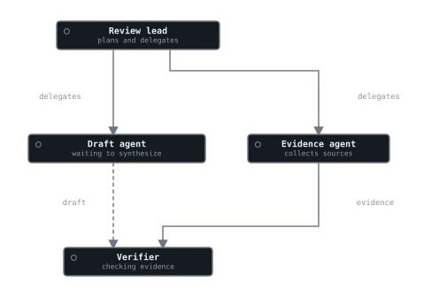
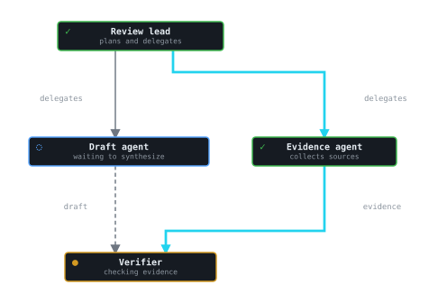

Orchgraph live state comparison
Before: structure only

After: live node and edge overlays

HTML renderer
delegatesdelegatesevidencedraft
Review leadplans and delegates
Evidence agentcollects sources
Draft agentwaiting to synthesize
Verifierchecking evidence